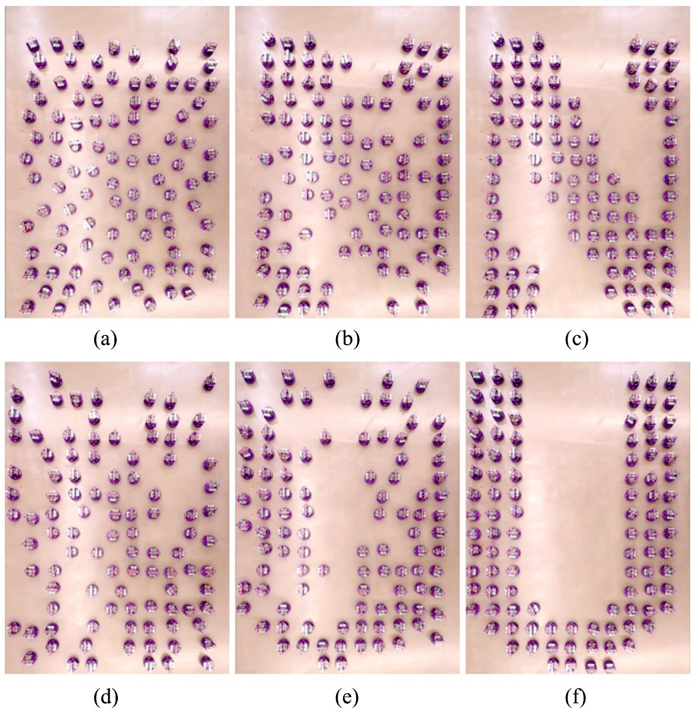
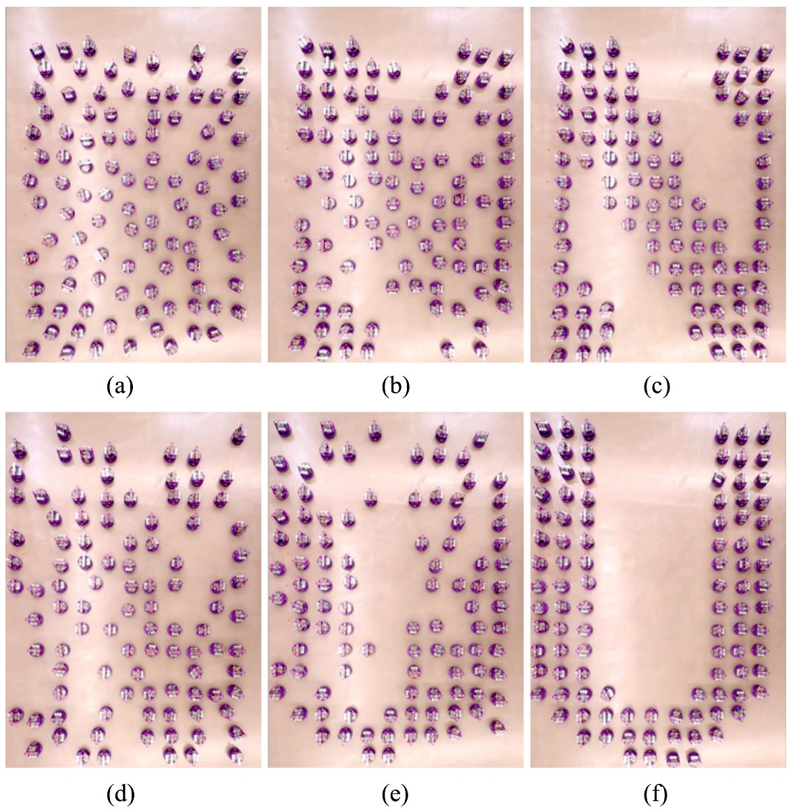

Abstract
The problem of shape formation in decentralized swarms has been tackled in many ways. However, most methods must make a choice between providing well-planned paths or low runtime results. In this paper, we evaluate an algorithm by Wang and Rubenstein that provides low runtime results by sampling from discrete space, and develop a continuous version of this algorithm. We analyze theoretical safety guarantees of this algorithm and compare its performance to the discrete version using metrics such as runtime, total distance traveled by the swarm, and efficiency. We also implement an asynchronous decentralized swarm simulator to run experiments and verify results.
 
